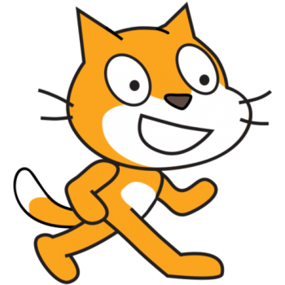

Áreas de Atuação
Dev .NET & Backend
Desenvolvimento de software estável focado em arquiteturas escaláveis, lógica orientada a objetos (POO) e manipulação de banco de dados sob ambiente Linux (Zorin OS).
Game Development
Criação e programação de mecânicas de jogos interativos, prototipagem ágil e forte atuação técnica e de gestão de equipes em Game Jams de forma multidisciplinar.
Professor de TI & Educador
Docência prática em lógica, tecnologia e desenvolvimento de games. Projetos ativos de inclusão digital para todas as faixas etárias e facilitação de grupos de idiomas.
